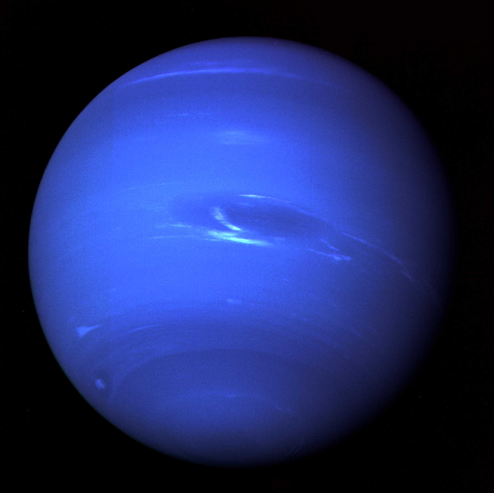

Uranus was officially discovered by Sir William Herschel in 1781. ... Uranus turns on its axis once every 17 hours, 14 minutes. ... Uranus makes one trip around the Sun every 84 Earth years. ... Uranus is often referred to as an “ice giant” planet. ... Uranus hits the coldest temperatures of any planet.
